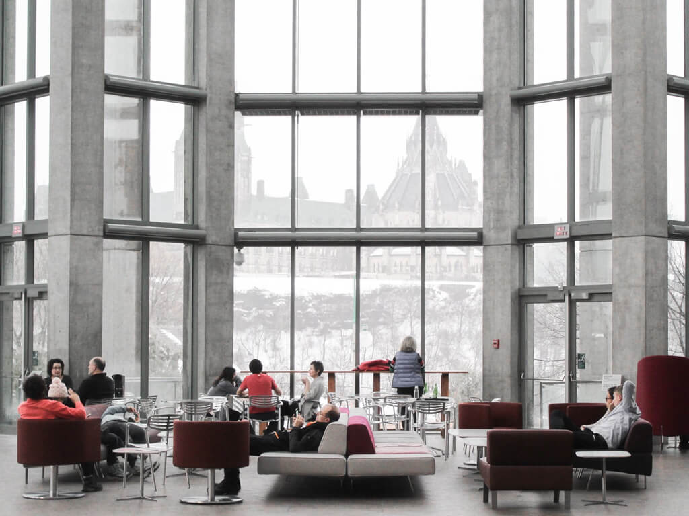

Teknologi manufaktur untuk menghasilkan komponen kendaraan berkualitas
Proses manufaktur yang terencana menjadi dasar untuk menghasilkan komponen kendaraan yang andal. Setiap tahapan produksi dilakukan dengan memperhatikan ketepatan, konsistensi, dan mutu. Pemanfaatan teknologi modern mendukung efisiensi kerja sekaligus membantu memastikan setiap produk memenuhi standar yang telah ditetapkan.
Pengendalian mutu dilaksanakan secara berkelanjutan, mulai dari pemilihan bahan baku hingga pemeriksaan produk akhir. Dengan demikian, setiap komponen dapat digunakan sesuai fungsinya.
Ketelitian dalam setiap proses merupakan kunci untuk menjaga keandalan produk dan kepercayaan pelanggan.
Selain teknologi, keterampilan dan kedisiplinan sumber daya manusia juga berperan penting dalam proses produksi. Kerja sama antartim membantu menjaga kelancaran operasional dan memenuhi kebutuhan produksi. Penerapan prosedur kerja yang konsisten turut mendukung keselamatan karyawan serta kualitas hasil produksi. Perusahaan terus melakukan evaluasi agar proses manufaktur dapat berjalan lebih efektif dan memberikan hasil yang optimal.
Komitmen terhadap mutu dan perbaikan berkelanjutan
Perbaikan berkelanjutan dilakukan melalui pemantauan proses dan tindak lanjut atas setiap temuan. Langkah ini membantu perusahaan menjaga standar produksi sekaligus menyesuaikan diri dengan perkembangan kebutuhan industri. Setiap masukan menjadi bahan evaluasi untuk meningkatkan mutu, efisiensi, dan keselamatan kerja.

Mendukung perkembangan industri otomotif
Industri otomotif membutuhkan komponen yang dibuat dengan presisi dan memenuhi persyaratan teknis. Kapabilitas manufaktur yang terintegrasi membantu mendukung kebutuhan tersebut. Melalui inovasi dan kerja sama, perusahaan berupaya memberikan kontribusi bagi perkembangan industri otomotif nasional.
Upaya tersebut terus dijalankan dengan mengutamakan mutu, keselamatan, dan kepuasan pelanggan.

Georgia Reader Balas
Uraian yang jelas mengenai proses produksi membantu pembaca memahami pentingnya ketelitian di setiap tahap. Penerapan standar yang konsisten juga mendukung mutu produk.